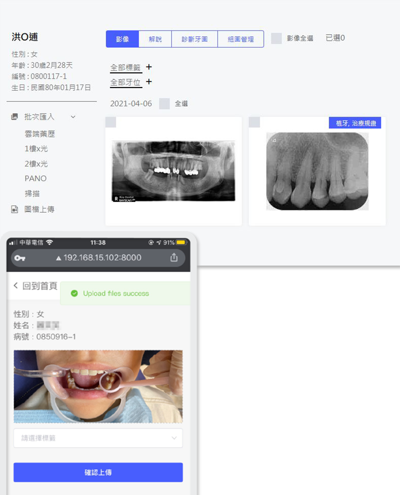
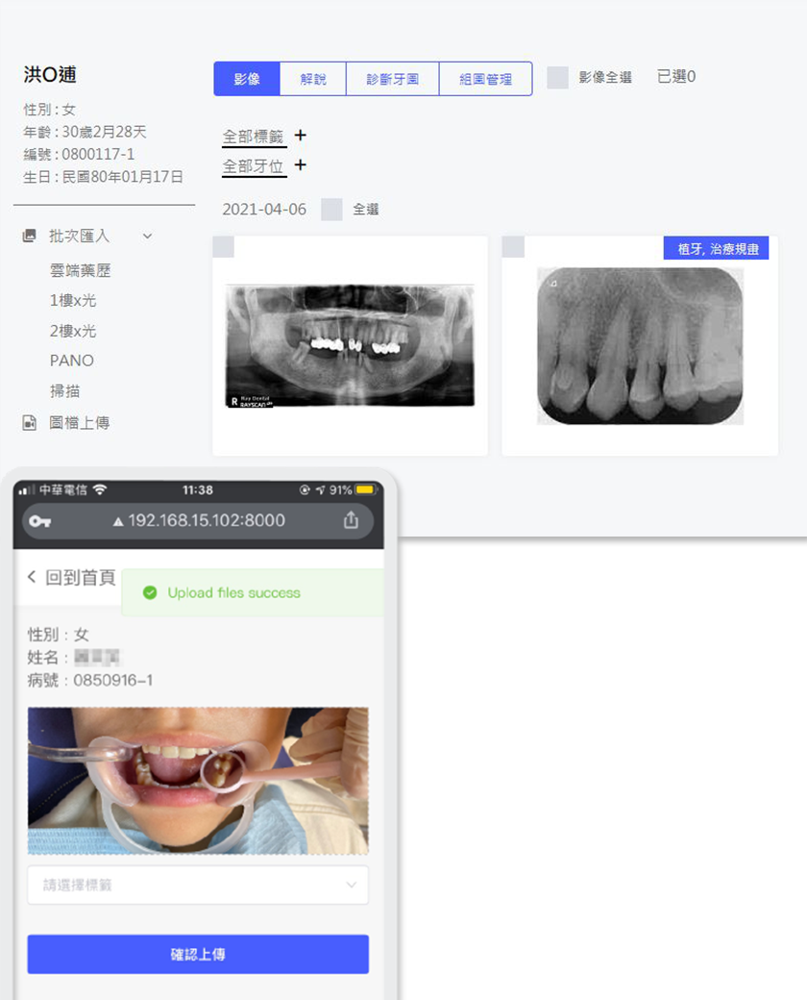

還在一位一位手動幫病患報到嗎？
櫃檯前排了一串人龍讓你壓力巨大嗎？
用電腦自助報到，簡單又迅速，用過的都說讚！
複診的患者占每天掛號七成，這七成的掛號患者如果可以自助報到，
將節省七成的時間，用樂晴讓櫃台不再人擠人。


樂晴多好用？
帶你來看看診所的一天
「關於本日預約，陳醫師今天有三位植牙的病患、張醫師有一位預約拔牙的患者…」

用樂晴開啟診所新的一天
用樂晴開啟
診所新的一天
候診的電視可以播放醫師、診所介紹，讓患者知道診所看診文化和感染控制流程，更是最佳的衛教板。
疫情期間更能透過手機候號功能避免病患在候診區群聚的風險，還有樂衍獨家設計的專屬空氣品質介面，
搭配EDIMAX空氣品質感測器，讓診所精準掌握溫度、懸浮粒子，確保醫護人員及病患的健康！

點選預約功能鍵進入預約畫面，並點擊「預約名單」
將當日或當週的預約病患與預約事項清楚列出，精準掌握診所當日的時間表！


樂晴約診 一指到位
樂晴約診 一指到位
還在皺著眉頭、瞇起眼睛翻閱紙本約診本，困難的在一行行字海中尋找醫師的治療空檔時間嗎？
這時候，就交給樂晴約診吧！
「喂？小姐啊，我想要預約陳醫師幫我看牙！」
「先生稍等，我幫您找找…」
「喂？小姐啊，我想要預約陳醫師幫我看牙！」
「先生稍等，我幫您找找…」
不需要搬出一本本厚重的約診本，也無須一頁一頁翻閱每位醫師的預約狀況，樂晴系統不僅支援電腦作業，連手機平板也都OK，就連不同的作業系統，樂晴也都沒在怕的！
不管診所使用Mac系統或是Windows系統，也都能夠用樂晴進行約診，讓你優雅從容地完成每一次預約。
幫你做到客戶管理，讓每個患者都感受診所的溫暖，電話通通不漏接，還有即時錄音的功能，降低醫療糾紛，打造良好醫病關係。
樂晴系統快速預約功能，只要點選需要的治療時間長度(ex:15分鐘)
以及欲看診的醫師，便會出現此位醫師排班時的每個15分鐘空檔時間，能快速而準確的找出醫師空檔為患者預約，還有「足跡」功能能顯示患者的預約歷程，讓診所更有效的追蹤患者的治療狀況。
使用樂晴，預約簡單又快速、櫃檯人員一目瞭然，準確告知病患明天有幾個空檔、後天有幾個空檔，讓菜鳥櫃台也能無壓力的輕鬆幫患者預約成功！

病患掛號不等候 看診好順心
病患掛號不等候
看診好順心
複診的患者占每天掛號七成，這七成的掛號患者如果可以自助報到，
將節省七成的時間，用樂晴讓櫃台不再人擠人。
病歷櫃OUT！
初診詢問及同意書無紙化
病患掛號不等候
看診好順心
讓患者清楚知道手術說明，保障醫病之間的互信關係；同時還能減少紙本同意書存放的困難，更能從容的找出需要的那份電子同意書，無須緊張的在病歷櫃、紙張堆中翻找。從此以後，診所動線規劃不再侷限於要有多少的病歷櫃上！
「面對需要進行不同治療的各種病患，我拿出我的ipad，優雅的遞出電子同意書，數位方式能快速找到我需要的同意書樣式，再也不怕診所的櫃子被紙本同意書塞好塞滿了！」
輕鬆匯入影像及影片 蒐集歸檔無負擔
輕鬆匯入影像及影片
蒐集歸檔無負擔
 

簡訊line輕鬆通知 診所服務更貼心
簡訊line輕鬆通知
診所服務更貼心
診所病患百百種，記得每位患者的特質並想出相對應的措施很重要！樂晴幫你將患者「貼標籤」，讓你能透過患者標籤清楚歸納患者特質，管理起來更確實更輕鬆！
現代人生活忙碌，忘記有預約看牙的病患大有人在！
不僅影響診所看診時間，還有可能被病患抱怨「怎麼都不提醒我？」
樂晴系統搭配簡訊發送，還連結了Line功能，進入預約名單中點擊簡訊發送便能自動提醒已預約病患及定期回診簡訊，不只如此，還有各種不同的簡訊範本供診所挑選，提醒病患一秒完成！
幫診所找出錯誤病歷 輕鬆確確認無負擔
簡訊line輕鬆通知
診所服務更貼心
讓診所流程順暢，不只需要讓病患的預約掛號及看診順利進行，在確認病歷方面更不能馬虎！
欠卡、未達申報時間、未填寫病歷…，申報前才手忙腳亂的確認本月病歷的錯誤內容嗎？
透過錯誤病歷明細進行查閱及修正，病歷填寫錯在哪？系統通通詳細又明確的報給你知！
點選「Check&finding尚未填寫」則能提醒診所哪些病歷主訴未填寫、哪些病歷為初診卻未填寫診斷發現等等，點選「檢附X光及檢查表」則提醒哪些處置需附X光、哪些處置需附檢查表。
及時發現並修改，樂晴讓診所輕鬆完成病歷檢查作業。
樂晴醫事管理系統
你一定值得擁有！
樂晴醫事管理系統
你一定值得擁有！
發現了嗎？用了樂晴醫事管理系統，助理的工作量及錯誤率都大大的降低，不僅提升診所效率，還能讓病患自在舒適等待看診，更能讓你擺脫匆促慌張的生活。
發現了嗎？用了樂晴醫事管理系統，助理的工作量及錯誤率都大大的降低，
不僅提升診所效率，還能讓病患自在舒適等待看診，更能讓你擺脫匆促慌張的生活。
客服專線
周一至周五 08:30-22:00
週六 08:30-18:00
周日固定休
客服專線
周一至周五-
08:30-22:00
週六-
08:30-18:00
周日固定休